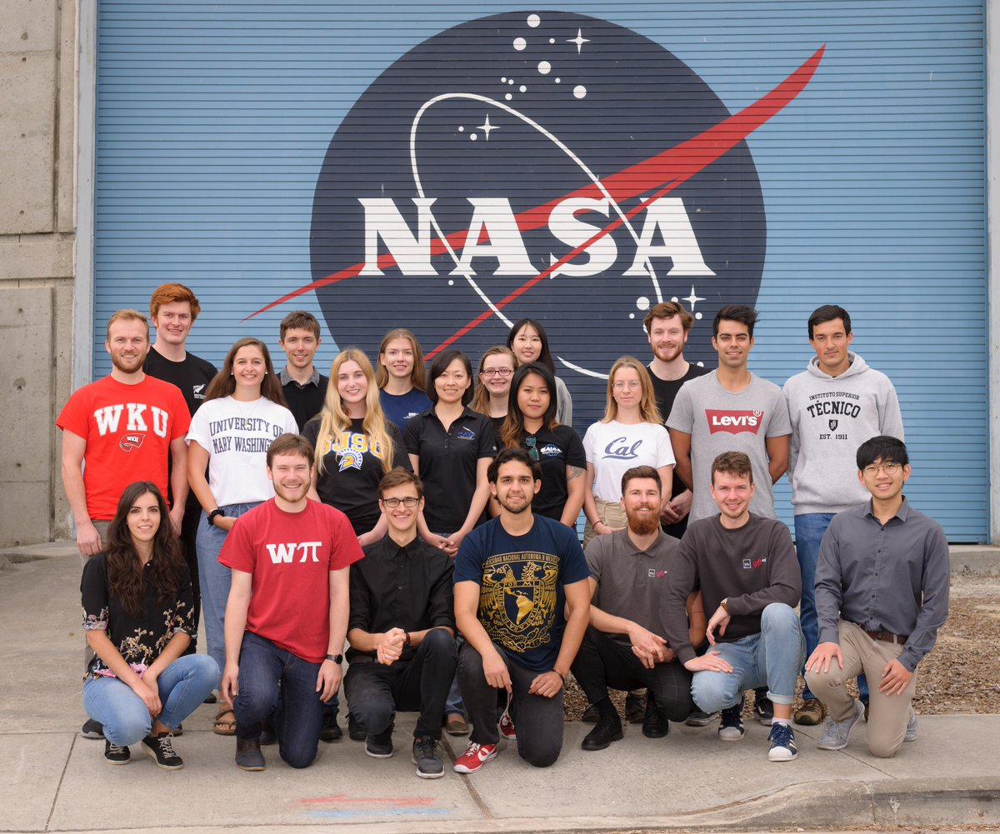
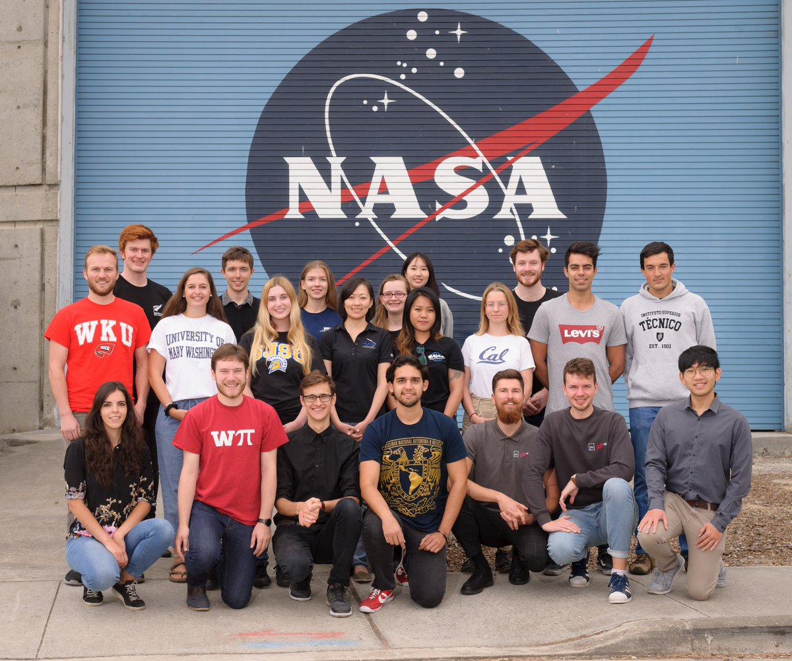
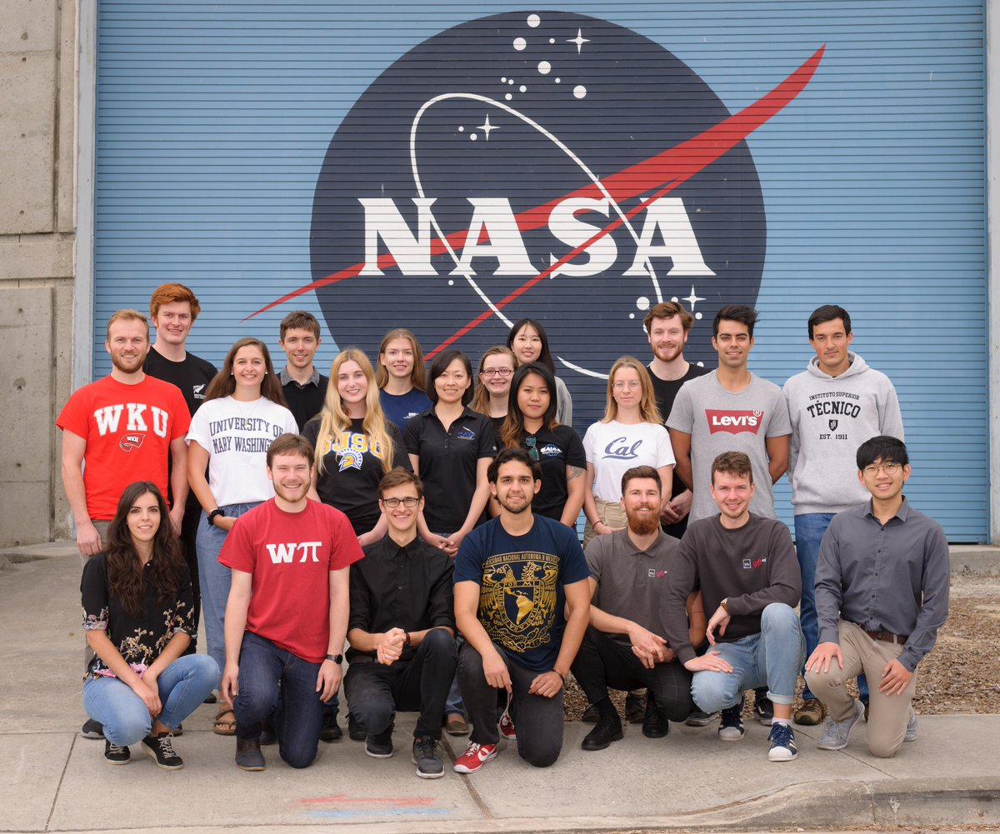

Alexis Madrid
Hello, my name is Alexis Madrid I go to school at the University of California Riverside. I am a second-year English major, and I am intending on making my concentration: Native American literature. I do a couple of things on campus. One of the things I do is mock trial, this is a club on campus. Mock Trial is an innovative, engaging, and often life-changing civic education program that combines performance-based, law-related education with tournament-style, academic competition. This club is intended for students who might want to go into the law field. After I graduate I am thinking about going into law. I am considering exploring criminal law when I go to law school. I am also a university honors student, I have only been doing this for one year. University Honors engages a diverse community of students, faculty, and staff in the creation of global citizens through high-impact experiences that emphasize original scholarship, contribution, creativity, and innovation. My main goal in college is to graduate with a high GPA for law school and to learn more about English.
My first job was at a restaurant at Golden Corral and my job title was a server. my second job was at a restaurant named Texas Roadhouse and my job title was also a server. serving entails. Greeted and provided customers with attentive services while dining in our restaurant. Always making guest satisfaction the number one priority in order to deliver the perfect service experience at the restaurant. Also ensuring the quality of food and beverages given to guests. Duties and responsibilities include, but are not limited to: servicing the Guest in a friendly, efficient manner while maintaining a clean and safe dining area and also completing carry-out orders. Always ensuring that guests feel welcome, comfortable, and well attended to at all times.
Some things I like to do in my free time is reading every single day. I also like to read books that are both fictional and non-fictional and even historical. I also like to listen to music and watch movies. During my free time I also play the guitar. I love to play the guitar because it is a great way to pass time but stimulate the mind. I also like to walk my dog every morning and this is also a great time to enjoy the nature outside. I also spend a lot of time studying and doing homework when I am not working. During the summer I had an internship with NASA. I did this to explore my career options and while it was very engaging and fun it was not what I want to do for the rest of my life. This did help me meet new people and make connections outside of my intended workplace. I am looking to find a job that is both fun and engaging. I am very hard-working and I love to work as a team. I am looking forward to whatever is the next step in my path for my future.
Experience
Teaching Assistant
• Ran sessions to help students learn how to code
• Reviewed and graded student coding projects
• Created educational content to help promote student education
• TA'd for over 400 students each academic quarter
Education
UC Riverside
University of California Riverside
University of California Riverside
Portfolio
 

